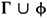

by Abraham Kandel
CRC Press, CRC Press LLC
ISBN: 084934297x Pub Date: 11/01/91
|
|
Fuzzy Expert Systems
by Abraham Kandel CRC Press, CRC Press LLC ISBN: 084934297x Pub Date: 11/01/91 |
| Previous | Table of Contents | Next |
First, let us discuss the consequences of C3. The only two distinct suppliers which are family related are S1 and S2 (with probability .8). We shall check whether this constraint implies higher probability for some of the tuples in the relation SP. Using the conjunction derivation rule, we can compute the probability of φ, the left-hand side of C3. Then we can use modus ponens to derive the probability of the right-hand side of C3. Consequently, some of the probabilities are increased; in case the constraint implies a lower probability than was given, we retain the higher value. The following tuples probabilities of the relation SP are changed: <s1, p1> to .72. <s2, p3> to .36.
A similar analysis for the consequences of C4 shows that in the relation S, the following tuples probability is reduced (since in this case the complement is the derived formula): <s1, N.Y.> to .44, <s3, N.Y.> to .44. Notice that although the probability of these tuples decreased, the probability of the other tuples (e.g., <s1, N.O.>) is not changed.
Example 7:
This example shows how a useful combination of PL and probability or belief theory may be achieved. We take Shafer’s example, The Burglary of the Sweetshop, from Reference 14. The highlights of the case include some evidence that the thief is left-handed, and another evidence that the theft was an inside job. Using Shafer’s theory we can compute the combined effect of the evidence against the single left-handed clerk LHC of the sweetshop. Assume now that the following additional information is available:
Whenever conclusions have to be derived using inferences (in the context of ES, for example), very important characteristics of the system are its soundness and completeness. In FOPC, a logical system is sound if, given any consistent set of formulas, only true formulas may be inferred. It is complete if, given a set of formulas Γ, every formula logically implied by Γ is derivable from Γ. We have to translate these FOPC notions to the context of PL, in which a formula, rather than being true in a model, has a probability of being true.
Let Γ be a nonempty set of formulas. We define the probability of Γ by pΓ = Πi pi where i ∈ I, I is an index set for Γ, and pi is the probability of satisfaction of the ith formula in Γ. Obviously, for pΓ to be positive, only a finite number of formulas in Γ may have probability <1. An alternative definition is pΓ = infi pi. Clearly, for each φ ∈ Γ, pφ ≥ pΓ. In both cases FOPC satisfaction of Γ is equivalent to having pΓ = 1.
Let φ be a consequent of Γ, and let Γ′ be . Whichever of these definitions we adopt, the probability of Γ′ may be less than that of Γ. To see why, consider first the inf definition. The derived formula probability is a product of other probabilities and so may have a probability less than the inf. The same phenomenon might occur even if we adopt the first definition. Consider for example Γ = {φ, Ψ, φ → [φ → [Ψ → θ]]}. If all formulas in Γ have probability p, than Γ has probability p3 but θ has probability p4, which is strictly less than pΓ when p < 1. We conclude that both definitions are potentially valuable for the following discussion.
To study consistency, let us consider first logical (semantic) implication:
A set of formulas Γ in FOPC in consistent if we cannot derive from Γ both a formula φ and not φ. This concept can be generalized to PL in more than one way. A starting point is to require that PL consistency be compatible with FOPC consistency whenever all the probabilities are 1. This number (1) may be interpreted as the difference between the probability of satisfaction of a derived formula and that of its complement.
Let ΔΓ be the set of formulas derivable from Γ:
Let us consider another approach to consistency. In FOPC, the consistency of Γ is equivalent to having a model for Γ. This can be translated in PL to having a positive probability for Γ. Note that changes in probability are possible as derived formulas are added to Γ, thus making the degree of consistency dependent on whether or not the consequences are added to the set (the first definition of consistency does not have this drawback).
| Previous | Table of Contents | Next |